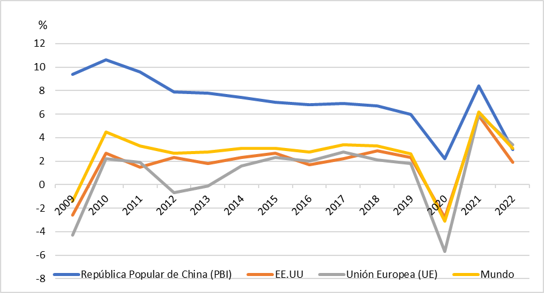
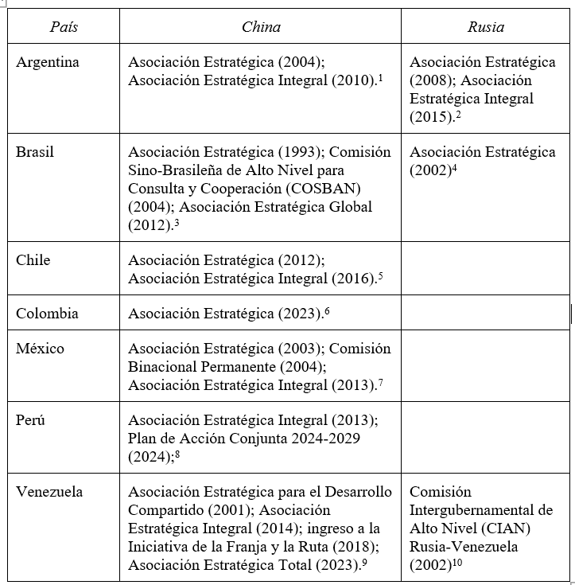

CICLOS
CICLOS
Reconfiguration of Power and Regional Autonomy: Challenges and Opportunities for Latin America and the Caribbean in the 21st Century
Resumen
Este artículo analiza la reconfiguración del orden mundial en clave multipolar, marcada por el ascenso de potencias euroasiáticas, el declive relativo del eje euroatlántico y la disputa por los recursos estratégicos del Sur Global. Se examinan las principales dinámicas geopolíticas y geoeconómicas que dan forma a este escenario, y su impacto en los márgenes de autonomía de América Latina y el Caribe. A partir de un enfoque crítico y multidisciplinario, se indaga si el actual contexto de competencia interestatal abre oportunidades para redefinir la inserción internacional de la región sobre nuevas bases, orientadas al desarrollo, la soberanía y la integración regional.
Palabras clave: autonomía; multipolarismo; reconfiguración geopolítica; transición de poder; Sur Global.
Abstract
This paper analyzes the ongoing reconfiguration of the world order through a multipolar lens, focusing on the rise of Eurasian powers, the relative decline of the Euro-Atlantic axis, and the growing competition for strategic resources in the Global South. It explores key geopolitical and geoeconomic dynamics shaping this scenario and their impact on Latin American and Caribbean's autonomy. Through a critical and interdisciplinary approach, the paper assesses whether the current context of inter-state rivalry creates opportunities for the region to redefine its international insertion toward development, sovereignty, and regional integration.
Key words: autonomy; multipolarism; geopolitical reconfiguration; transition of power; Global South.
Fecha de recepción: 26 de febrero de 2025
Fecha de
aceptación: 12 de abril de 2025
Introducción
La configuración del sistema internacional atraviesa una etapa de transición profunda, signada por el declive relativo del eje euroatlántico y la reemergencia de diversas potencias alternativas, en particular China, Rusia e India. Esta transformación no responde a una lógica lineal de sucesión hegemónica, sino que se manifiesta como una reconfiguración fragmentada, conflictiva y multipolar del orden mundial. En este marco, Eurasia se ha convertido en el principal espacio de acumulación de poder económico, político y tecnológico, que impulsa un entramado de iniciativas interestatales y multilaterales desafíantes de la arquitectura internacional consolidada tras la Guerra Fría. A su vez, Estados Unidos y sus aliados europeos adoptan estrategias de contención y presión híbrida para sostener su primacía en un contexto de estancamiento económico, financiarización depredadora y crisis interna de sus modelos políticos (Merino y Barrenengoa, 2023; Merino y Rang, 2016; Merino, 2024; Korybko, 2018, pp. 9–10).
La región latinoamericana y caribeña, históricamente subordinada a los intereses del eje euroatlántico, se encuentra tensionada entre la continuidad de su inserción dependiente y la posibilidad de redefinir su lugar en el nuevo tablero geopolítico. La creciente disputa entre polos de poder reactualiza el debate sobre la autonomía, el desarrollo y la integración regional, especialmente ante el renovado interés de actores extrahemisféricos por los recursos estratégicos del continente. En este marco, la pregunta por los márgenes de maniobra de los países latinoamericanos y caribeños cobra centralidad: ¿es posible articular estrategias de inserción internacional más autónomas en un escenario global en disputa?, ¿qué condiciones internas y externas habilitan o restringen esa posibilidad?
Este trabajo se propone analizar cómo incide la reconfiguración del orden mundial en las posibilidades de agencia internacional de los países latinoamericanos, con el objetivo de identificar oportunidades y limitaciones para desplegar estrategias de desarrollo soberanas. Parte de la hipótesis de que el actual contexto de rivalidad entre grandes potencias abre una ventana estratégica para redefinir la inserción internacional de la región, siempre que logre diversificar su patrón de vinculación externa, construir consensos políticos internos y avanzar en procesos de integración regional con orientación estratégica.
Desde un enfoque interdisciplinario y crítico, se articula el análisis histórico-estructural de la economía-mundo con las tradiciones del pensamiento autonomista latinoamericano, incorporando también aportes recientes sobre la guerra híbrida, los Estados-continentales y las nuevas formas de articulación geoeconómica. El trabajo se organiza en tres apartados: en primer lugar, se examina el ascenso y la convergencia de potencias euroasiáticas, con énfasis en las estrategias de integración impulsadas por China y Rusia; en segundo lugar, se analiza el declive relativo del eje euroatlántico y sus respuestas geopolíticas frente a este proceso; y finalmente, se aborda el rol de Latinoamérica y el Caribe, sus iniciativas de articulación regional y los intereses en juego por parte de las principales potencias mundiales en la disputa por el Sur Global.
Ascenso, convergencia y consolidación de potencias euroasiáticas
Desde la perspectiva de Wallerstein (2007), la economía-mundo ha estado en un prolongado estancamiento desde la década de 1970, donde las tres áreas con fuertes escenarios económicos -Estados Unidos, Europa Occidental y Japón- trataron de transferir sus pérdidas unos a otros (p. 6). Según Arrighi (2010), desde los años 1970, se produjeron cambios en la configuración espacial de los procesos de acumulación de capital. En aquella década, la tendencia predominante pareció inclinarse hacia una reubicación de los procesos de acumulación desde los países y regiones de altos ingresos a los de bajos ingresos. En la década de 1980, en cambio, la tendencia predominante pareció ser la recentralización del capital en los países y regiones de altos ingresos. Pero cualquiera que sea la dirección del movimiento, la tendencia desde 1970 ha sido hacia una mayor movilidad geográfica del capital (pp. 1-2).
En relación a estas interpretaciones, la desintegración de la Unión Soviética en diciembre de 1991 consolidó la hegemonía unipolar del Occidente geopolítico (Merino, 2024), con el eje euroatlántico a la cabeza. Sin embargo, los atentados del 11 de septiembre de 2001 en conjunción con la reemergencia de actores alternativos al unipolarismo euroatlántico plantearon tensiones, conflictos e inestabilidades que se manifestaron a lo largo de las últimas décadas. De este modo, cada potencia diseña su propia iniciativa y visión de cómo debería ser el nuevo orden, en un contexto cada vez más inestable, donde el Occidente geopolítico utiliza la guerra híbrida -una combinación entre revoluciones de colores y guerras no convencionales- como táctica político-militar para sustituir gobiernos no alineados a sus políticas (Merino y Barrenengoa, 2023; Merino y Rang, 2016; Merino, 2024; Korybko, 2018, pp. 9–10).
De acuerdo con Merino (2020), la región euroasiática representa el 37% de la superficie terrestre mundial; es el espacio donde se encuentra la mayor cantidad de habitantes del planeta (72,5%) y buena parte de sus principales civilizaciones históricas y entidades culturales nacionales contemporáneas. En dicha región, se encuentran actualmente tres de los cuatro núcleos de la economía mundial: China, con un PBI a precios actuales de 14,34 billones de dólares según el Banco Mundial con datos de 2019; Europa Occidental (Eurozona con un PBI de 13,34 billones de dólares); y Japón (5,08 billones de dólares). Allí se encuentra la mayor parte de los principales polos de poder mundial, hoy en plena disputa en un escenario de multipolaridad relativa y crisis del orden mundial: China, la gran potencia-civilización re-emergente que modifica el escenario mundial y expresa el ascenso más general de Asia Pacífico como región; Rusia, con su poderío político-militar, territorial e inmensos recursos naturales; la zona euro con el eje Berlín-París a la cabeza y una multiplicidad de potencias regionales como Turquía, Irán, India o Arabia Saudita (pp. 64-5). En términos económicos, de acuerdo con Prasad (2023), durante la última década y media, China ha sido el principal impulsor del crecimiento económico mundial, ha representado el 35% del crecimiento del PIB nominal mundial, mientras que Estados Unidos representó el 27%. Medido a tipos de cambio de mercado, el PIB de China fue de 18,3 billones de dólares en 2022, el 73 % del PIB de Estados Unidos y diez veces más que el 7 % del PIB estadounidense de 1990.
Gráfico 1

Fuente: elaboración propia con datos del Banco Mundial. https://lc.cx/oTWH88
El eje sino-ruso funciona como el motor de la integración euroasiática. Ambos Estados poseen asiento permanente en el Consejo de Seguridad de la Organización de Naciones Unidas (ONU), esto les otorga un mayor peso político en la toma de decisiones a nivel mundial; forman parte del G-20 desde 2008; establecieron el mecanismo BRICS en 2009, junto a India, Brasil y Sudáfrica, e impulsaron el Nuevo Banco de Desarrollo del BRICS (NBD) en 2014. En este sentido, cabe destacar que durante 2020, los países BRICS (Brasil, Rusia, India, China y Sudáfrica) superaron a los países del G7 (Estados Unidos, Canadá, Alemania, Reino Unido, Francia, Italia y Japón) en relación al Producto Interno Bruto (PIB) mundial, calculado a través de la paridad de poder adquisitivo (PPA). Para 2023, esta disparidad se había ampliado, y los BRICS controlaban en conjunto el 32 % del PIB mundial, superando a los países del G7, que tenían una participación ligeramente inferior, del 30% (Kamin y Langhammer, 2024).
Por su parte, el acuerdo firmado en 2018 entre la Unión Económica Euroasiática (UEE) y la iniciativa china Belt and Road Initiative (BRI) (Comisión Económica Euroasiática, 2018), agrega ímpetu y establece una base legal sobre la cual armonizar la iniciativa rusa y china de integración regional (Sahakyan y Zheng, 2024). Esto explica también cómo cada potencia regional euroasiática posee su propia propuesta para la integración de su zona de influencia, las que convergen en muchos aspectos, en especial en lo referido a la promoción de un sistema internacional multipolar basado en relaciones de beneficio mutuo. Ejemplo de lo mencionado son el Plan Maestro de Conectividad de la Asociación de Naciones de Asia Sudoriental (ASEAN por sus siglas en inglés), la iniciativa Bright Road de Kazajistán, la iniciativa Middle Corridor de Turquía, la iniciativa Development Road de Mongolia, la iniciativa Two Corridors, el One Economic Circle de Vietnam, entre otros (Yongquan, 2018, p. 98; Sahakyan y Zheng, 2024).
La visión china puede resumirse en cuatro áreas centrales: en primer lugar, la reforma del sistema de Bretton Woods; en segundo lugar, la creación de nuevas instituciones; tercero, la promoción de asociaciones globales y, por último, la integración económica de Eurasia. Muestra de ello es la serie de políticas de alcance mundial que llevó adelante Pekín para aumentar su poder de decisión e influencia en la formulación de un conjunto normativo, dentro de ellas figuran la Iniciativa del Cinturón y la Ruta (Belt and Road Initiative - BRI), anunciada en 2013, que incluye la Ruta de la Seda Terrestre, la Ruta de la Seda Marítima - con más de 20 puertos- y a partir de 2015, la Ruta de la Seda Digital, con miles de kilómetros de fibra óptica en todo el mundo (Rang, 2022). El Banco Asiático de Inversión e Infraestructura (BAII), funciona como complemento del BRI y al mismo tiempo es una alternativa continental del Banco Mundial (BM) y competidor del Banco de Desarrollo Asiático, alineado con Japón, Estados Unidos y la Unión Europea (UE) y con el Área de Libre Comercio del Asia-Pacífico.
Por el lado de Rusia, según su Concepto de Política Exterior (2023), “Rusia busca transformar Eurasia en un espacio común continental de paz, estabilidad, confianza mutua, desarrollo y prosperidad”. En este sentido, se destaca:
Más de mil años de independencia estatal, el legado cultural de la era precedente, los profundos vínculos históricos con la cultura tradicional europea y otras culturas euroasiáticas, y la capacidad de asegurar la coexistencia armoniosa de diferentes pueblos, grupos étnicos, religiosos y lingüísticos en un territorio común, desarrollado a lo largo de muchos siglos, determinan la posición especial de Rusia como un país-civilización único y una vasta potencia euroasiática y europacífica que reúne al pueblo ruso y a otros pueblos pertenecientes a la comunidad cultural y civilizacional del mundo ruso. (Ministerio de Asuntos Exteriores de la Federación de Rusia, 2023).
Ya desde 2016 el gobierno ruso viene sosteniendo oficialmente que el poder y el potencial de desarrollo mundial están en un proceso de descentralización y desplazamiento hacia la región de Asia y el Pacífico, que erosiona el dominio económico y político mundial de las potencias occidentales tradicionales (Karaganov et al, 2016).
De esta forma, Rusia presentó la iniciativa de una Gran Asociación Euroasiática como un instrumento para la articulación entre la Organización de Cooperación de Shanghái (OCS), la BRI, y la ASEAN, con una mirada amplia, respetando las diferentes visiones de desarrollo de cada cultura. Según Putin (2022):
No sería exagerado afirmar que la Gran Eurasia es un gran proyecto civilizacional. La idea principal es crear un espacio común para la cooperación equitativa entre las organizaciones regionales. La Gran Asociación Euroasiática está diseñada para transformar la arquitectura política y económica y garantizar la estabilidad y la prosperidad en todo el continente, considerando, por supuesto, los diversos modelos de desarrollo, culturas y tradiciones de todas las naciones. Confío, y esto es evidente, en que este centro atraerá a un gran público.
En este sentido, la 22° Cumbre de la OCS, en Samarcanda (Uzbekistán) en septiembre de 2022, incorporó a la República Islámica de Irán como nuevo miembro, inició el proceso de adhesión de Bielorrusia, otorgó la condición de Socios de Diálogo a Bahréin, Maldivas, Kuwait y los Emiratos Árabes Unidos, y acordó incluir a Egipto, Arabia Saudita y Qatar como nuevos socios de diálogo (Muratbekova, 2022). La cumbre contó con la presencia de ocho mandatarios, entre ellos Xi Jinping, Vladimir Putin y Narendra Modi, este fue, además, el primer encuentro presencial entre el presidente chino y el ruso posterior a la intervención en Ucrania (Presidencia de la República de Uzbekistán, 2022). En términos geopolíticos, Irán posee una ubicación estratégica por su proyección al Golfo Pérsico y al Océano Índico. Es una pieza fundamental en la iniciativa del Corredor Internacional de Transporte Norte-Sur, en el cual destaca el Puerto de Chabahar. (Putin y Pezeshkian, 2025; Gobierno de la Federación de Rusia, 2023). Este corredor multimodal de más de 7.000 kilómetros de longitud está diseñado para facilitar el transporte de mercancías entre Rusia, Asia Central, Irán y la India, y ofrece una ruta más corta y eficiente en comparación con las tradicionales a través del canal de Suez. De esta manera, su adhesión fortalece las cadenas logísticas alternativas, el regionalismo, y va en consonancia con la estrategia iraní en materia de política externa denominada Look East e implementada durante los mandatos de Mahmud Ahmadinejad (2005-2013), Hasan Rohani (2013-2021) y Ebrahim Raisi (2021-2024) (Azizi, 2023). Así, China y Rusia adquieren mayor importancia para Irán, en detrimento del eje euroatlántico, desde el retiro unilateral por parte de Estados Unidos del acuerdo nuclear en 2018 y la imposición de sanciones económicas a Teherán. En este sentido, tanto China como Rusia buscan aunar esfuerzos por integrar, fortalecer y pacificar su espacio geográfico circundante. En 2023, producto de la mediación china, las dos potencias del mundo islámico -Irán, predominantemente chií, y Arabia Saudita, predominantemente sunní- restablecieron relaciones diplomáticas formales (Wang, 2024).
Nos complace ver que Siria se ha reincorporado a la familia de la Liga de los Estados Árabes; Qatar, Siria, Irán y Turquía han restablecido lazos diplomáticos o normalizado sus relaciones, respectivamente, con Baréin y los Emiratos Árabes Unidos, con Túnez y Arabia Saudita, con Sudán y con Egipto; y que los pueblos de los países de la región están retomando el futuro de Oriente Medio en sus manos. (Wang, 2024)
En 2024, tanto Irán como Arabia Saudita pasaron a formar parte del bloque BRICS ampliado, junto a Egipto, Etiopía y los Emiratos Árabes Unidos. A mediados de 2024, Arabia Saudita anunció la no renovación del acuerdo con Estados Unidos que daba lugar a los petrodólares, a través del cual durante cinco décadas, los árabes vendieron petróleo barato a Washington (Ng, 2024). Con la participación de las principales potencias energéticas mundiales, el bloque BRICS se asegura el poder de mercado sobre este recurso para las décadas venideras. Egipto y Etiopía son dos economías pujantes, con más de 100 millones de habitantes cada uno y con una ubicación geoestratégica: Egipto controla el Canal de Suez y Etiopía tiene influencia en el Cuerno de África, con proyección hacia el Estrecho de Bab El-Mandeb. En este sentido, desde finales de 2023, las fuerzas hutíes de Yemen llevan adelante ataques a buques comerciales del eje euroatlántico, en represalia por su apoyo a Israel, que causan disrupciones en las cadenas logísticas del comercio internacional e incrementos en los precios de los fletes. En contraposición, los hutíes acordaron con China y Rusia en marzo de 2024, que sus respectivos buques podrían circular el Estrecho sin ser atacados (Dagher y Hatem, 2024).
Cabe destacar también, la concreción de la Declaración de Pekín, donde China, en el marco de la OCS, en conjunto con los países de la Liga Árabe, lograron articular a las catorce facciones palestinas, acumulando fuerzas para una mayor influencia política que presione para un alto al fuego en los próximos meses y ponga fin al enfrentamiento en Gaza entre Hamás e Israel (Ministerio de Relaciones Exteriores de la República Popular de China, 2024).
El declive relativo de las principales potencias euroatlánticas
A partir de los atentados del 11 de septiembre de 2001, los halcones de la Administración Bush (h) decidieron enfrentar el declive estadounidense a partir de una escalada de los gastos militares (Wallerstein, 2007, p. 8), por medio de una “guerra contra el terror” y el intervencionismo directo en diversas partes del mundo. La crisis financiera de 2008-2009 comenzó a transformar el proceso de globalización económica que promovía la inversión extranjera directa (IED) desde la apertura comercial. De acuerdo con Merino, Bilmes y Barrenengoa (2023), desde los años 1980, por cada punto de crecimiento del PIB mundial, aumentaban en 2 puntos el comercio y en 3 la IED. Esta fue la fórmula de la llamada globalización, que tendió hacia la constitución de un sistema de producción transnacional conducido por las redes financieras globales. Desde 2008-2009 con la crisis financiera global, esta situación se ralentizó y, en paralelo, apareció una clara brecha y dualidad entre el estancamiento del Norte Global -notorio en el caso de Japón y la Zona Euro, cuyo PIB a precios actuales en dólares no creció en 13 años, elemento que señalasu declive en la jerarquía de la riqueza global- y, por otro lado, el avance del crecimiento en Asia Pacífico en general y China en particular, cuyo PBI en sólo 14 años pasó de ser sólo el 25% con respecto al tamaño de la economía estadounidense a ser el 76%, y de representar sólo el 28% del PBI de la Eurozona llegó a ser 21% más grande (p. 7).
A su vez, estos fenómenos son atravesados por la irrupción de la cuarta revolución espacial (Nievas, 2021), a través de la cual adquieren centralidad grandes conglomerados tecnológicos que controlan inconmensurables cantidades de datos, como las GAFAM (Google, Amazon, Facebook, Apple y Microsoft). Los Estados-Nación permanecen impotentes al carecer de capacidades de regulación frente a la irrupción de espacios particulares en los que los ordenamientos legales pierden significación (Nievas, 2021, p.411), tales como las guaridas fiscales. De esta manera, se consolida un eje euroatlántico con Estados Unidos a la cabeza, el cual es gobernado por el estado profundo globalista mediante una coalición de las GAFAM con el Pentágono, la Organización del Tratado del Atlántico Norte (OTAN), las agencias de inteligencia y el capital financiero globalizado (Dierckxsens y Formento, 2021, p. 67). Las grandes corporaciones internacionales y los conglomerados financieros han obtenido beneficios récord, mientras que la tasa de inversión empresarial ha disminuido, llevando a estos sectores a más acumulación de riqueza de la que pueden consumir o reinvertir. La especulación financiera, el crecimiento a través de la deuda y el saqueo del dinero de los contribuyentes llegaron al final de su vida útil como soluciones temporales al estancamiento crónico. La clase capitalista está cada vez más desesperada por encontrar nuevas formas de deshacerse del capital que ha acumulado. El resultado es que el sistema se está volviendo más violento, más depredador y más temerario (Siira, 2024). Esta financiarización de la economía en el Occidente geopolítico a través de la fuga de capitales y la deuda, en conjunto con la aparición de compañías militares privadas, torna obsoleta la definición weberiana de Estado (Nievas, 2018, p. 109), y anuncian no sólo la madurez de una etapa particular de desarrollo de la economía-mundo, sino el comienzo de una nueva (Arrighi, 2010, p.88). En contraposición, se consolida un eje euroasiático, con China y Rusia motorizando esa articulación en conjunto con una multiplicidad de potencias medias, diversas entre sí, que llevan adelante un modelo de capitalismo de Estado, y controlan sectores estratégicos de sus entramados productivos; con respeto a la soberanía de los Estados, donde prevalece una visión de no injerencia en los asuntos domésticos de cada Nación soberana, ni búsqueda de imponer valores propios a otras sociedades.
En este contexto, la crisis de la globalización neoliberal liderada por el eje euroatlántico unipolar hizo recalibrar la estrategia de Washington, cuya principal amenaza dejó de ser el “terrorismo internacional” y pasó a ser el eje sino-ruso. Según la Estrategia de Seguridad Nacional de los Estados Unidos de América de la Administración Trump I, “China y Rusia desafían el poder, la influencia y los intereses de Estados Unidos, intentando erosionar la seguridad y prosperidad estadounidense” (Casa Blanca, 2017, p. 2). Por su parte, la Administración Biden continuó en esta línea:
Incluso mientras persista la guerra del presidente Putin, seguiremos enfocados en el mayor desafío al orden internacional en el largo plazo, que es el que plantea la República Popular China. China es el único país que tiene tanto la intención de redefinir el orden internacional como el poder económico, diplomático, militar y tecnológico para hacerlo. La visión de Pekín nos alejaría de los valores universales que han sostenido gran parte del progreso conseguido por el mundo en los últimos 75 años. (Blinken, 2022)
El retorno de la administración republicana en Estados Unidos continuó con una retórica agresiva hacia quienes considera adversarios en la arena internacional. En este marco, se sostiene que
la República Popular China está explotando cada vez más el capital estadounidense para desarrollar y modernizar su aparato militar, de inteligencia y de seguridad, lo que representa un riesgo significativo para el territorio de los Estados Unidos y sus Fuerzas Armadas en todo el mundo (Casa Blanca, 2025).
Asimismo, se advierte que
las inversiones de adversarios extranjeros, incluida la República Popular China, en sectores clave de la economía estadounidense representan una amenaza creciente para la seguridad nacional (Casa Blanca, 2025).
Finalmente, se señala que
la estrategia de fusión militar-civil de la República Popular China busca integrar sus empresas privadas y públicas en una infraestructura de defensa y control estatal, lo que amplifica los riesgos asociados a las inversiones chinas en los Estados Unidos (Casa Blanca, 2025).
De esta manera, el escenario internacional está inmerso en una época donde prima la competencia y confrontación entre grandes potencias, y se adoptsn estrategias que reconfiguran las diversas preferencias de los actores. En el caso de Estados Unidos, incluso amenaza a históricos aliados y socios de la Organización del Tratado del Atlántico Norte (OTAN), como Canadá. Trump afirmó:
Creo que Canadá estaría mucho mejor siendo el estado número 51, porque perdemos 200 mil millones de dólares al año con Canadá y no voy a permitir que eso suceda (The Guardian, 2025).
En una línea similar, el presidente estadounidense sostuvo la necesidad de incrementar la presencia militar en Groenlandia, cuestionó la legitimidad de la soberanía danesa sobre el territorio y sugirió una posible intervención de la OTAN:
Rusia, como saben, tiene cerca de 40 [rompehielos], y nosotros solo uno grande. Pero toda esa zona se está volviendo muy importante (...) Y Dinamarca no puede hacerlo. Ya saben, Dinamarca está muy lejos y realmente no tiene nada que ver. (...) Realmente la necesitamos por razones de seguridad nacional. Creo que por eso la OTAN tal vez tenga que involucrarse de alguna manera (Casa Blanca, 2025, traducción propia).
A esto se suman las declaraciones del Secretario del Departamento de Estado, Marco Rubio, quien afirmó que, ante una eventual independencia de Groenlandia frente a Dinamarca, Estados Unidos estaría dispuesto a intervenir para “crear una alianza” con el territorio, respetando –según sostuvo– la ‘autodeterminación’ del pueblo groenlandés” (Rubio, 2025).
Estrategias de ambos polos para América Latina y el Caribe, y el rol de la región ante la reconfiguración de poder
En este escenario de competencia y reconfiguración de poder mundial, América Latina y el Caribe buscaron aunar esfuerzos para ganar mayor peso en la arena internacional. Durante la década de 1990, el modelo comercialista guió la integración regional, priorizó la apertura y la eliminación de barreras arancelarias, expresión de las reformas de carácter neoliberal en el marco de la ofensiva capitalista más global (Kan, 2021). En la posguerra fría, la hegemonía de Washington parecía incontestable. Sin embargo, en los primeros años del siglo XXI, ésta fue desafiada de diversas formas, por ejemplo, ante el avance de la coordinación política alternativa en torno a la Unión de Naciones Suramericanas (UNASUR) y la Comunidad de Estados Latinoamericanos y Caribeños (CELAC), la reaparición y ampliación del Mercosur como bloque regional en perspectiva neodesarrollista, el despliegue del eje bolivariano y un proyecto novedoso de integración (el ALBA-TCP), que supo desafiar explícitamente al gigante del Norte, y la creciente presencia de potencias emergentes extrahemisféricas (China, Rusia y la India, entre otras), distintos analistas postulan el declive estadounidense en el continente (Merino, Morgenfeld y Aparicio Ramírez, 2023). A su vez, las principales economías de la región ejecutaron una progresiva profundización de vínculos políticos con potencias euroasiáticas, como puede visualizarse en el siguiente cuadro comparativo:
Cuadro 1
Principales acuerdos firmados por los países de América Latina

3 Itamaraty – Ministério das Relações Exteriores. (2015, 01 de enero). República Popular da China. Governo Federal do Brasil. https://www.gov.br/mre/pt-br/assuntos/relacoes-bilaterais/todos-os-paises/republica-popular-da-china 4 Itamaraty – Ministerio de Relaciones Exteriores. (2015, 09 de enero). Federación de Rusia. Gobierno Federal de Brasil. https://www.gov.br/mre/es/temas/relaciones-bilaterales/todos-los-paises/federacion-rusa 5 Ministerio de Relaciones Exteriores de Chile. (2016, 22 de noviembre). Chile y China establecen una Asociación Estratégica Integral. https://www.minrel.gob.cl/chile-y-china-establecen-una-asociacion-estrategica-integral/minrel_old/2016-11-22/191207.html 6 DangDai. (2023, 26 de octubre). Colombia firmó una asociación estratégica con China. https://dangdai.com.ar/2023/10/26/colombia-firmo-una-asociacion-estrategica-con-china/ 7 Embajada de México en China. (2021, 29 de septiembre). Relación política. Secretaría de Relaciones Exteriores. https://embamex.sre.gob.mx/china/index.php/es/la-embajada/relacion-politica 8 Ministerio de Relaciones Exteriores de Perú. (2023, 5 de noviembre). Declaración conjunta entre la República del Perú y la República Popular China sobre la profundización de la Asociación Estratégica Integral. 9 TeleSUR. (2024, 28 de junio). Venezuela y China, 50 años de un vínculo estratégico. https://www.telesurtv.net/venezuela-y-china-50-anos-de-un-vinculo-estrategico/ 10 Pensando Américas. (2023, 18 de abril). Venezuela y Rusia: una sólida alianza estratégica en permanente ascenso. Recuperado de http://www.pensandoamericas.com/venezuela-y-rusia-una-solida-alianza-estrategica-en-permanente-ascenso
Sin embargo, los Estados de la región no fueron capaces de consolidar esquemas de integración económica, a pesar de la cercanía geográfica, de su comunidad cultural y lingüística, como tampoco han sido capaces de construir consensos internos sobre las cuestiones fundamentales del desarrollo que incluyan objetivos de política exterior, más que de las fuerzas políticas dominantes en cada período, y que prioricen la cooperación económica regional. En consecuencia, los cambios pendulares en la orientación política de los gobiernos de los diversos países han sido factores de freno para profundizar la integración (De Miranda Parrondo, 2024).
Por el contrario, las principales potencias mundiales tienen claridad en sus objetivos para la región. En el Libro Blanco de China sobre América Latina y el Caribe, se valora profundamente su relación con América Latina, en busca de un desarrollo de relaciones “basadas en la igualdad, el beneficio mutuo y el desarrollo común” (Ministerio de Asuntos Exteriores de China, 2016), caracterizado por el impulso en proyectos de infraestructura en América Latina a través de la Iniciativa de la Franja y la Ruta, y de contribuir a la modernización de puertos, caminos y ferrocarriles, lo que ha sido una parte importante de su acercamiento estratégico (Ministerio de Asuntos Exteriores de China, 2016). Además, se resalta la colaboración en sectores como la energía, las finanzas y la tecnología, lo que abre nuevas oportunidades para el crecimiento mutuo (Ministerio de Asuntos Exteriores de China, 2016).
En cuanto a la influencia de Estados Unidos en la región, China subrayó que “el principio de no injerencia en los asuntos internos y el respeto a la soberanía de los países latinoamericanos son fundamentales” (Ministerio de Asuntos Exteriores de China, 2016). Esta postura refleja el rechazo a cualquier intento de imposición o de intervención externa en los asuntos de América Latina, defendiendo su autonomía frente a las influencias extranjeras.
Finalmente, el concepto de multipolaridad es central en la visión de China sobre el orden mundial, el cual se apoya en un mundo en el que “el principio de igualdad soberana de los países, el respeto mutuo y la cooperación entre naciones sin hegemonía ni imposición son los pilares fundamentales” (Ministerio de Asuntos Exteriores de China, 2016). En este contexto, América Latina tiene un rol importante como parte de un sistema internacional plural y equilibrado, que favorezca la creación de un orden multipolar.
Contrariamente, la Unión Europea (Jütten, 2025) y Estados Unidos conciben como una amenaza la cooperación latinoamericana con China. El almirante Craig Faller, excomandante del Comando Sur, advirtió que
el Canal de Panamá es un terreno clave en todo esto. América del Sur tiene una proporción positiva de agua y mucha tierra cultivable excedente. China no tiene nada de eso. (...) ¿Por qué China querría lograr un puerto de aguas profundas en El Salvador, Jamaica o República Dominicana? Su interés a largo plazo es la dominación económica, y harán lo que sea necesario. (Faller, 2021, traducción propia).
En la misma línea, la ex jefa del Comando Sur, general Laura Richardson, remarcó la preocupación de Washington por el accionar de China y Rusia en la región, afirmando que
dentro de Sudamérica, China está jugando ajedrez y Rusia está jugando damas. Sus acciones multifacéticas combinadas están desestabilizando la región, empoderando el autoritarismo y socavando los principios democráticos. (Richardson, 2022, traducción propia).
Además, Richardson puso el foco en el impacto económico y ambiental de la pesca ilegal realizada por flotas subsidiadas por el gobierno chino en aguas cercanas a Sudamérica: “estas embarcaciones (...) evitan que los pescadores locales ganen cerca de 3 mil millones de dólares en ingresos anuales” (Richardson, 2022, traducción propia).
Por su parte, en el 2024 SOUTHCOM Posture Statement, se sostiene que la República Popular China ha sabido aprovechar la apertura de las democracias latinoamericanas para avanzar con prácticas de inversión consideradas depredadoras, el desarrollo de megaproyectos de infraestructura -como puertos e instalaciones espaciales de uso dual- y actividades cibernéticas que comprometen la soberanía regional. Estas declaraciones, sumadas a las de Faller y Richardson, dejan claro que Estados Unidos considera a América Latina y el Caribe como su zona de influencia natural, en gran parte debido a los vastos recursos naturales de la región, los cuales son percibidos como estratégicos para la seguridad nacional y la estabilidad económica. En una entrevista realizada por el Atlantic Council, la generala sintetizó con crudeza el interés geoestratégico estadounidense por la región, al enumerar las razones por las cuales América Latina importa para la seguridad nacional de Estados Unidos:
el 60% del litio del mundo se encuentra en el triángulo del litio: Argentina, Bolivia y Chile. Tenemos 31% del agua dulce del mundo en esta región. También hay grandes reservas de petróleo, cobre, oro y otros recursos naturales que son cruciales para nuestra seguridad nacional. (Richardson, 2023, traducción propia).
En sintonía con esta visión, desde el Departamento de Defensa de Estados Unidos también se han manifestado preocupaciones respecto al avance de actores extrahemisféricos en América Latina. Daniel P. Erikson, actual subsecretario adjunto de Defensa para el Hemisferio Occidental, señaló que tanto China como Rusia representan desafíos distintos para la región, lo que requiere una respuesta coordinada de todo el gobierno estadounidense. En febrero de 2024, en una conferencia de prensa oficial, afirmó que es necesario “reducir o eliminar las actividades militares y de inteligencia de estos países en la región” y prevenir inversiones en áreas estratégicas sensibles, como infraestructura crítica, telecomunicaciones y recursos naturales. En esa línea, subrayó que
la influencia maligna de China y Rusia debe enfrentarse mediante una respuesta integral, ya que ambos persiguen intereses económicos, políticos y diplomáticos que podrían socavar la estabilidad regional. (Erikson, 2024, traducción propia).
Dentro de este orden de ideas, Unión Europea también manifiesta su preocupación al respecto. Según Jütten (2025),
la expansión económica y política de China en América Latina podría alterar los modelos de relación y cooperación previamente establecidos con la región, creando nuevas dinámicas y desafíos tanto para Europa como para otras potencias globales.
Reflexiones finales
La actual reconfiguración del orden mundial, lejos de consolidar un nuevo centro hegemónico único, expresa un proceso de transición caracterizado por tensiones, fragmentación y la emergencia de múltiples polos de poder. En este marco, el ascenso de Eurasia -con China y Rusia como motores- y el relativo declive del eje euroatlántico redefinen las reglas del juego internacional, tensionando estructuras, alianzas y patrones de inserción. Latinoamérica y el Caribe, tradicionalmente subordinados al diseño estratégico de potencias externas, se encuentran ante una encrucijada histórica: persistir en una inserción dependiente o construir márgenes de autonomía en un mundo en disputa. La reemergencia de Eurasia puede otorgar la posibilidad de diversificar sus alianzas externas a una región que estuvo subordinada en los últimos siglos por potencias del eje euroatlántico.
A su vez, la competencia entre grandes potencias otorga a la región un valor estratégico renovado, tanto por sus recursos naturales como por su posición geopolítica, principalmente por los pasos interoceánicos y su proyección antártica. Pero esa relevancia no garantiza per se una mayor capacidad de autonomía política. El aprovechamiento de esta coyuntura depende de la voluntad y capacidad de los Estados latinoamericanos y caribeños para articular consensos internos duraderos, fortalecer sus estructuras productivas, diversificar sus vínculos internacionales y retomar la senda de la integración regional. A inicios del siglo actual hubo acciones concretas de regionalismo posneoliberal que alentaban a una mayor coordinación regional en materia de políticas públicas, que trascendían la lógica de la mera integración comercial imperante durante los 1990 y abordaron áreas como la defensa y la infraestructura. Por otro lado, la construcción de relaciones de carácter estratégico con potencias reemergentes, como Rusia y China, promueven la diversificación de vínculos externos que trascenden el hemisferio occidental. Estas asociaciones parecen prometedoras para la región, sobre todo por la posibilidad que estas potencias otorgan en materia de inversión de infraestructura para el desarrollo económico y la cooperación en tecnologías sensibles. Sin embargo, relacionarse con estas potencias de forma aislada, es decir, no como bloque regional, puede posicionar a los países latinoamericanos y caribeños en una situación de debilidad y dependencia. Si esto se conjuga con la falta de consensos internos en materia de políticas de Estado, puede condenar a los países de la región a repetir formas de vinculación de carácter dependiente y periférico para sus sociedades.
A modo de cierre, la competencia entre las grandes potencias es una ventana de oportunidad para América Latina y el Caribe, siempre y cuando la región se vincule con esas potencias a modo de bloque político-económico, habiendo consensuado de antemano bajo qué objetivos se buscará profundizar esos lazos. Sólo bajo estas condiciones podrá traducirse la transición de poder mundial en una oportunidad efectiva para reconfigurar su desarrollo desde parámetros soberanos, solidarios y plurales.
Listado de referencias
Arrighi, G. (2010). The Long Twentieth Century. Money, Power, and the Origins of Our Times. Londres. Verso.
Azizi, H. (2023). Iran’s “Look East”strategy: Continuity and change under Raisi. Middle East Council on Global Affairs. https://mecouncil.org/publication/irans-policy-and-its-relations-with-china-and-russia-me-council/
Blinken, A. J. (2022, 26 de mayo). The administration’s approach to the People’s Republic of China. Departamento de Estado de los Estados Unidos. https://au.usembassy.gov/secretary-blinken-speech-the-administrations-approach-to-the-peoples-republic-of-china/
Casa Blanca. (2025, 13 de marzo). Remarks by President Trump and NATO Secretary General Mark Rutte Before Bilateral Meeting. The White House. https://www.whitehouse.gov/remarks/2025/03/remarks-by-president-trump-and-nato-secretary-general-mark-rutte-before-bilateral-meeting/
Casa Blanca. (2017, 18 de diciembre). Estrategia de Seguridad Nacional de los Estados Unidos de América. https://trumpwhitehouse.archives.gov/wp-content/uploads/2017/12/NSS-Final-12-18-2017-0905-2.pdf
Casa Blanca. (2025, 21 de febrero). America First Investment Policy. https://www.whitehouse.gov/presidential-actions/2025/02/america-first-investment-policy/
Dagher, S. Hatem, M. (2023, 21 de marzo). Yemen’s Houthis Tell China, Russia Their Ships Won’t Be Targeted. Bloomberg. Recuperado de: https://www.bloomberg.com/news/articles/2024-03-21/china-russia-reach-agreement-with-yemen-s-houthis-on-red-sea-ships
De Miranda Parrondo, M. (2024). La reinserción económica de América Latina y el Caribe en un nuevo contexto geoestratégico internacional. En E. Pastrana Buelvas (Ed.), Reconfiguración del orden mundial: incertidumbres regionales y locales (pp. 269–310). CRIES / Fundación Konrad Adenauer. https://www.cries.org/wp-content/uploads/2024/09/RECONFIGURACION-DEL-ORDEN-MUNDIAL-INCERTIDUMBRES-REGIONALES-Y-LOCALES-2.pdf
Dierckxsens, W; Formento, W. (2021). Por una nueva civilización: El Proyecto Multipolar. Buenos Aires. Acercándonos Ediciones.
Erikson, D. P. (2024, 20 de febrero). Conferencia de prensa de Daniel P. Erikson, subsecretario adjunto de Defensa para Asuntos del Hemisferio Occidental [Transcripción]. Departamento de Defensa de los Estados Unidos. Recuperado de: https://www.defense.gov/News/Transcripts/Transcript/Article/3688551/
Eurasian Economic Commission. (2018). Agreement on economic and trade cooperation between the Eurasian Economic Union and its member states, of the one part, and the People's Republic of China, of the other part. https://eec.eaeunion.org/upload/medialibrary/5b9/Tekst-angiyskiy-_EAEU-alternate_-final.pdf
Faller, C. (2021, 8 de junio). Remarks – Project 2049 Conference on U.S.-China Strategic Competition in the Western Hemisphere. United States Southern Command. https://www.southcom.mil/Media/Speeches-Transcripts/Article/2663184/adm-faller-remarks-project-2049-conference-on-us-china-strategic-competition-in/
Gobierno de la Federación Rusa. (2023, 18 de mayo). Marat Khusnullin: El flujo de mercancías a lo largo del corredor de transporte internacional Norte-Sur podría alcanzar los 35 millones de toneladas en 2030. XIV Foro Económico Internacional Rusia – Mundo Islámico: Kazan Forum. http://government.ru/news/48506/
Jütten, M. (2025). China's increasing presence in Latin America: Implications for the European Union. EPRS | European Parliamentary Research Service, Members' Research Service, European Union. https://www.europarl.europa.eu/RegData/etudes/BRIE/2025/769504/EPRS_BRI%282025%29769504_EN.pdf
Kamin, K., y Langhammer, R. J. (2024). BRICS+: a Wake-Up Call for the G7?. Cuadernos Económicos De ICE, (107). https://doi.org/10.32796/cice.2024.107.7802
Kan, J. (2021). Autonomía, soberanía y cooperación política. La integración latinoamericana a comienzos del siglo XXI. En R. Aronskind (Comp.), La integración regional en América Latina: Lecciones de una experiencia compleja (pp. 55–91). Universidad Nacional de General Sarmiento.
Karaganov, S., Barabanov, O., Bezborodov, A., Bordachev, T., Kazakova, A., Likhacheva, A., Lukin, A., Makarov, I., Pyatachkova, A., Skriba, A., Sokolova, A., Suslov, D., y Timofeev, I. (2016). Toward the Great Ocean 4: Turn to the East. Preliminary Results and New Objectives (T. Bordachev, Ed.). Valdai Discussion Club. https://valdaiclub.com/files/11431/
Korybko, A. (2018). Guerras híbridas. De las revoluciones de colores a los golpes. Traducción de Thiago Antunes. 1 ed. São Paulo: Expressão Popular.
Merino, G. E. (2020). Eurasia y la (re)emergencia de China y Rusia. En G.E. Merino; L.M. Regueiro Bello y W.T. Iglecias (Coords.). Transiciones del Siglo XXI y China: China y perspectivas post pandemia. Ciudad Autónoma de Buenos Aires: CLACSO. pp. 64-75. En Memoria Académica. Disponible en: https://www.memoria.fahce.unlp.edu.ar/libros/pm.5527/pm.5527.pdf
Merino, G. E. (2024). Del G7 a los BRICS+: la transición del sistema mundial y el escenario geopolítico. Reoriente, 3(2), 7–40. Universidade Federal do Rio de Janeiro. https://ri.conicet.gov.ar/handle/11336/239697
Merino, G. E. (2024). Guerra y multipolaridad: sobre la dimensión geopolítica de la crisis de hegemonía. En M. Monereo, C. E. Martins y F. L. Segrera (Coords.), ¿Hacia la Tercera Guerra Mundial? (pp. xx–xx). Ediciones El Viejo Topo. https://www.memoria.fahce.unlp.edu.ar/libros/pm.6636/pm.6636.pdf
Merino, G. E., y Barrenengoa, A. (2023). La pandemia, el ascenso de China y el nuevo mapa del poder mundial. Desafíos para América Latina. En G. E. Merino, L. Regueiro Bello y W. T. Iglecias (Coords.), China y el nuevo mapa del poder mundial (pp. 29–59). CLACSO. https://www.clacso.org/china-y-el-nuevo-mapa-del-poder-mundial/
Merino, G., Bilmes, J., y Barrenengoa, A. (2023). Economía en el (des)orden mundial: ascenso de China, estancamiento del Norte Global y nuevo paradigma tecno-económico en disputa (Cuadernos N.º 5). Instituto Tricontinental. https://thetricontinental.org/wp-content/uploads/2023/06/20230626_Cuaderno-5_Web.pdf
Merino, G., Morgenfeld, L., y Aparicio Ramírez, M. (2023). Las estrategias de inserción internacional de América Latina frente a la crisis de la hegemonía estadounidense y del multilateralismo "globalista". En Nuevos mapas. Crisis y desafíos en un mundo multipolar (pp. 21–77). Ciudad Autónoma de Buenos Aires: CLACSO. https://www.memoria.fahce.unlp.edu.ar/libros/pm.6641/pm.6641.pdf
Merino, G.; Rang, C., coordinadores (2016). ¿Nueva guerra fría o guerra mundial fragmentada?. El resurgir de Rusia, el avance de China, los nuevos bloques emergentes y el desafío a las fuerzas unipolares de Occidente. Posadas: Editorial Universitaria de la Universidad Nacional de Misiones. En Memoria Académica. Disponible en: http://www.memoria.fahce.unlp.edu.ar/libros/pm.765/pm.765.pdf
Ministerio de Asuntos Exteriores de China. (2016, mayo 31). Desarrollo de relaciones con América Latina: cooperación y multilateralismo. Ministerio de Asuntos Exteriores de la República Popular China. https://www.mfa.gov.cn/eng/zy/gb/202405/t20240531_11367344.html
Ministerio de Asuntos Exteriores de la Federación de Rusia. (2023, 31 de marzo). Concepto de la política exterior de la Federación de Rusia. https://mid.ru/es/foreign_policy/official_documents/1860586/
Ministerio de Relaciones Exteriores de la República Popular China. (2024, 23 de julio). Palestinian factions sign Beijing Declaration on ending division and strengthening Palestinian national unity. https://www.mfa.gov.cn/eng/wjbzhd/202407/t20240723_11458790.html
Muratbekova, A. (2022). 2022 SCO Summit in Samarkand: Key Takeaways. Eurasian Research Institute. https://www.eurasian-research.org/publication/2022-sco-summit-in-samarkand-key-takeaways/
Ng, G. (2024, 10 de julio). Arabia Saudita en el declive del dólar global. Tektónikos. Recuperado de: https://tektonikos.website/arabia-saudita-en-el-declive-del-dolar-global/
Nievas, F. (2018). Marx, el espacio geográfico y el Estado. Sapientiae: Ciencias sociais, Humanas e Engenharias. Universidades Oscar Ribas. Vol (4). pp. 96-111.
Nievas, F. (2021). Hacia una nueva geopolítica. La cuarta revolución espacial. Cuadernos de Marte. Año 12, nro. 20. Enero-Junio 2021.
Prasad, E. (2023). China stumbles but is unlikely to fall. Finance y Development, 60(4). Fondo Monetario Internacional. https://meetings.imf.org/en/IMF/Home/Publications/fandd/issues/2023/12/China-bumpy-path-Eswar-Prasad
Presidencia de la República de Uzbekistán. (2022, 16 de septiembre). A solid package of documents signed following the Samarkand Summit. https://president.uz/en/lists/view/5544
Putin, V. (2022, 21 de febrero). Discurso del Presidente de la Federación Rusa. Presidente de Rusia. http://en.kremlin.ru/events/president/news/68484
Putin, V., y Pezeshkian, M. (2025, 17 de enero). Conferencia de prensa conjunta tras las conversaciones ruso-iraníes. Presidente de Rusia. http://www.en.kremlin.ru/events/president/transcripts/press_conferences/76126
Rang, C. A. (2024). El papel de China en la nueva reconfiguración global. En G. Merino (Ed.), China en el nuevo mapa del poder mundial (pp. 111–137). CLACSO. https://www.clacso.org/wp-content/uploads/2024/06/China-nuevo-mapa.pdf
Richardson, L. (2022, 18 de octubre). Prepared Remarks – Gen. Richardson Opening Remarks at the South American Defense Conference 2022. United States Southern Command. https://www.southcom.mil/Media/Speeches-Transcripts/Article/3161068/
Richardson, L. J. (2023, 19 de enero). A Conversation with General Laura J. Richardson on Security Across the Americas. Atlantic Council. Recuperado de https://www.atlanticcouncil.org/event/a-conversation-with-general-laura-j-richardson-on-security-across-the-americas/
Rubio, M. (2025, 4 de abril). Remarks to the press. Departamento de Estado de EE. UU. https://www.state.gov/secretary-of-state-marco-rubio-remarks-to-press-2/
Sahakyan, M. D., y Zheng, Y. (2024). China’s Belt and Road Initiative and the Eurasian Economic Union: Cooperation over Competition. Iran and the Caucasus, 28(3), 317-331. https://doi.org/10.1163/1573384X-02803007
Siira, M. (2024). Ucrania, Gaza y la nueva guerra fría: ¿De la crisis capitalista al genocidio?. Geopolitika. Recuperado de: https://www.geopolitika.ru/es/article/ucrania-gaza-y-la-nueva-guerra-fria-de-la-crisis-capitalista-al-genocidio
The Guardian. (2025, 10 de febrero). Trump le dice a Fox News que Canadá estaría mucho mejor siendo el estado número 51 [Video]. YouTube. https://www.youtube.com/watch?v=TWaF4Byczik
United States Southern Command (SOUTHCOM). (2024). 2024 Posture Statement of General Laura J. Richardson, Commander, United States Southern Command before the 118th Congress House Armed Services Committee. https://www.southcom.mil/Portals/7/Documents/Posture%20Statement/2024%20USSOUTHCOM%20Posture%20Statement.pdf
Wallerstein, I. (2007). La decadencia del imperio. Estados Unidos en un mundo caótico. Caracas: Monte Ávila Editores Latinoamericana.
Wang, Y. (2024, 9 de enero). The facilitation of the reconciliation between Saudi Arabia and Iran sets a new example of political settlement of hotspot issues. Ministerio de Relaciones Exteriores de la República Popular China. https://www.mfa.gov.cn/eng/wjbzhd/202403/t20240319_11262331.html
World Economic Forum. (2024, mayo 10). La OCDE mejora las perspectivas de la economía mundial. Recuperado de https://es.weforum.org/agenda/2024/05/la-ocde-mejora-las-perspectivas-de-la-economia-mundial-y-otras-noticias-economicas-para-leer/#:~:text=La%20OCDE%20mejora%20sus%20perspectivas%20econ%C3%B3micas%20mundiales,-La%20econom%C3%ADa%20mundialytext=Se%20espera%20que%20el%20crecimiento,3%25%20el%20a%C3%B1o%20que%20viene.
Yongquan, L. (2018). The greater Eurasian partnership and the Belt and Road Initiative: Can the two be linked?. Journal of Eurasian Studies. Nro. 9. pp. 94-99. Asia-Pacific Research Center, Hanyang University. Recuperado de: https://www.sciencedirect.com/science/article/pii/S1879366518300198
Notas
1. * Becario doctoral de la Agencia Nacional para la Promoción de la Investigación, el Desarrollo Tecnológico y la Innovación (Agencia I+D+I), en el Instituto de Estudios Históricos, Económicos, Sociales e Internacionales (IDEHESI-CONICET), Nodo Buenos Aires.